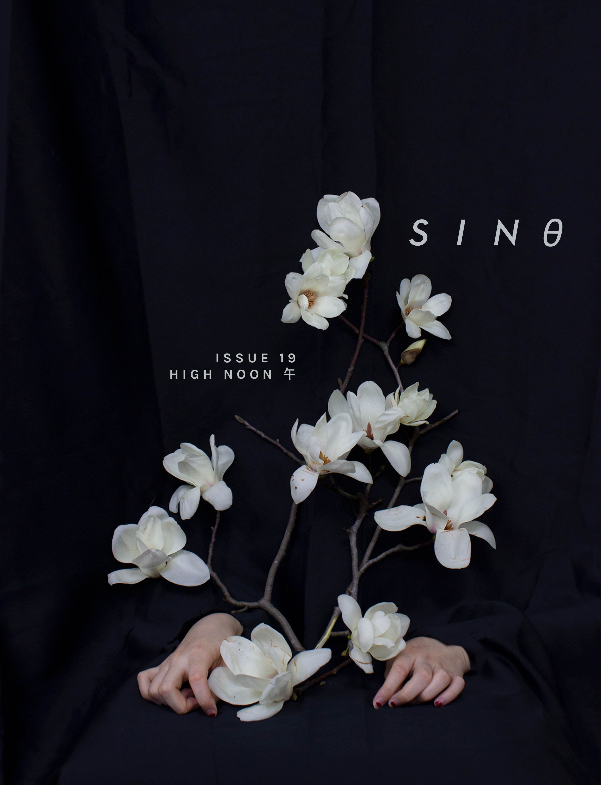

ORDER SINθ #19 NOW
Shadows cut at our heels, heat shimmering in the air: slink into the shade at high noon to enjoy sinθ #19 “HIGH NOON 午.” Featuring works that cut through the swelter, that will bring you to fever pitch, our nineteenth issue is a triumphant celebration of the pinnacle of the day.
In this issue:
- Poems beat hot and alive from Eileen Chong, Emily Lu, Sharon Lin, Lydia Wei, Emma Chan, Miriam Gauntlett, and Esme Huanhuan;
- Discussion between editor-in-chief Jiaqi Kang and assistant professor in Africana and feminist, gender, and sexuality studies at Cornell University Dr. Tao Leigh Goffe centers on writing and interpreting Afro-Asian identity, Black and Indigenous relationality, DJing, and other moments of warmth in research and creative pursuits;
- The body is bared as a site of art and possibility in conversation with editor Stephanie Chang and their Vancouver-based tattoo artist, illustrator Justine Crawford;
- Visual art by Kyla Yin, Lily Wei, and Moham Wang is saturated with all the vibrance of midday
- Michelle Sijia Ma’s photography captures the slow meridian crawl;
- Celeste Chen and Samantha Cheh’s stories bring us out into breathtaking orbits rounding closer and closer to the near sun;
- More fiction works by Kit Xiong and Claire Chee delve into the body, between the bones and burrowing into its softness and violence;
- The student spotlight shines on Yale Global Sustainability Scholar and dexterous violinist Epongue Ekille;
- and web editor Hayley Wu chats with designer, educator, urban farmer, and organizer Michael Leung about Hong Kong politics, art and academia, and frogs.
ORDER SINθ #19 NOW